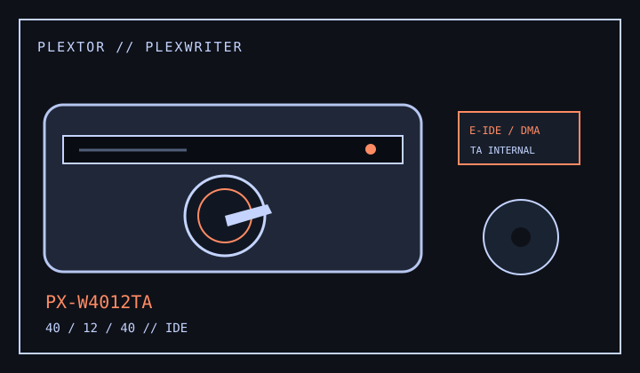

[ CD-R AND CD-RW DRIVES // IDENTIFIED MODEL ]
Plextor PX-W4012TA
Internal PlexWriter 40/12/40A with 40× CD-R write, 12× CD-RW rewrite and 40× CD read ratings.

IDENTIFICATION: PX-W4012TA identifies the internal ATAPI PlexWriter. Do not substitute PX-W4012TU external USB instructions or firmware.
Documented specifications
| Exact model | Plextor PX-W4012TA / PlexWriter 40/12/40A |
|---|---|
| CD-R write | Up to 40× |
| CD-RW rewrite | Up to 12× |
| CD read | Up to 40× |
| Supported media | Writes CD-R and CD-RW; reads CD-ROM, CD-DA and supported CD-R/RW media. CD-Text, multisession and other authored formats depend on the disc and host software. |
| Interface / bay | Internal E-IDE/ATAPI, 5.25-inch half-height drive; supports PIO 4, Multiword DMA 2 and Ultra DMA/33 modes. |
| Host compatibility | Requires an IDE/ATAPI host and recording software supporting the PlexWriter. Follow the manual's controller/OS requirements; modern adapters or operating systems may not preserve period burning features. |
| Firmware / jumper | Use firmware for PX-W4012TA only and preserve the installed revision/OEM identity. Set MA/SL/CS according to the chassis label/manual diagram and IDE channel; the TU model is not a firmware substitute. |
Compatibility and preservation
- Media quality, authoring mode and software support limit achievable speeds; verify every write.
- Retain the full model suffix, firmware, controller mode, jumper position, media code and error logs.
- Make checksummed images of valuable discs and keep verification records separate from the physical media.
Manufacturer and manual references
- Plextor PX-W4012TA installation and user manualModel-specific specifications, host requirements and jumper setup.
- Plextor PlexWriter 40/12/40A manual archiveArchived manufacturer manual for this exact internal product variant.